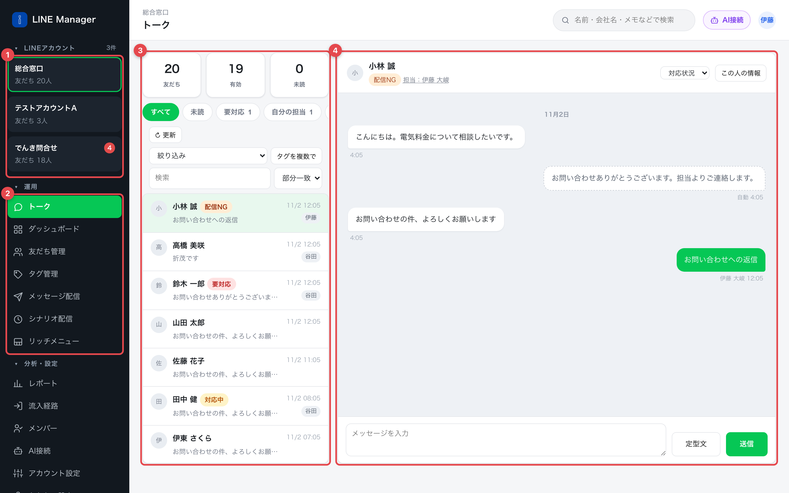
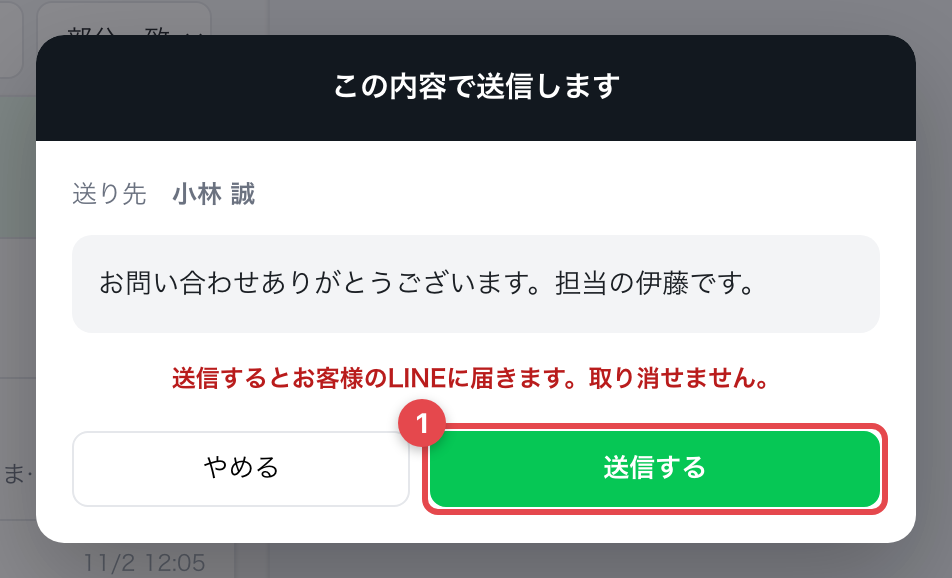
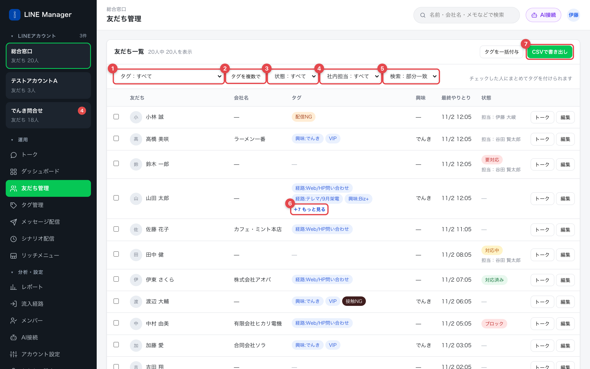
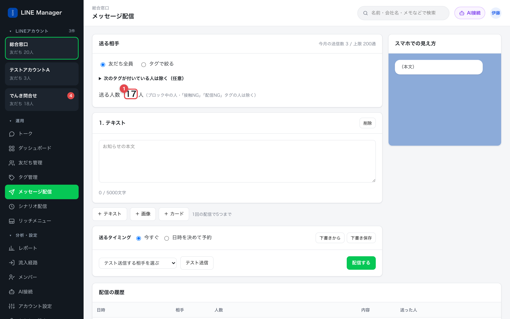
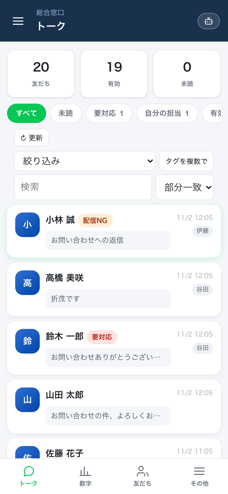
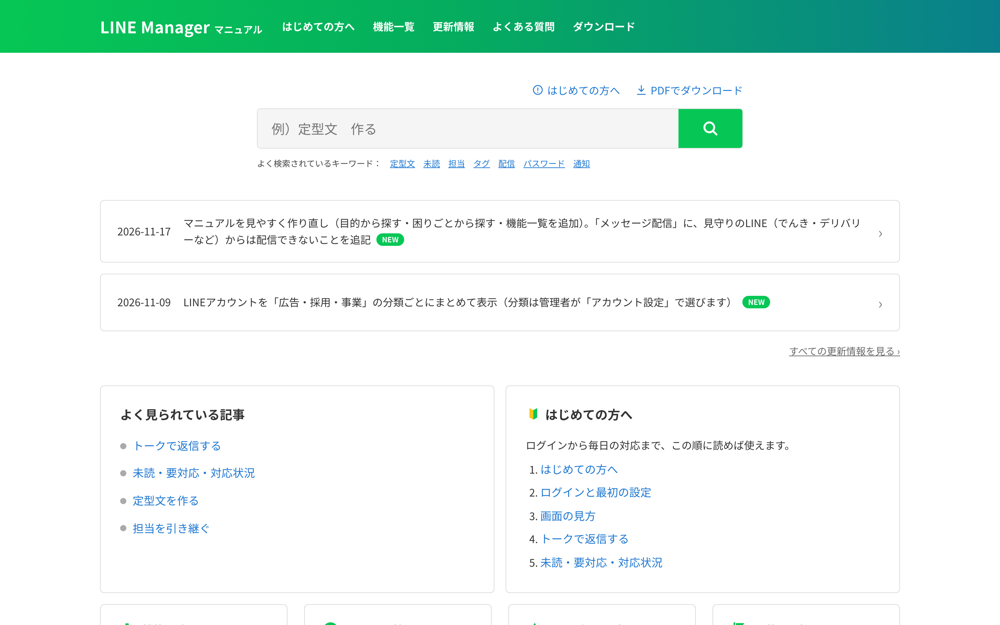
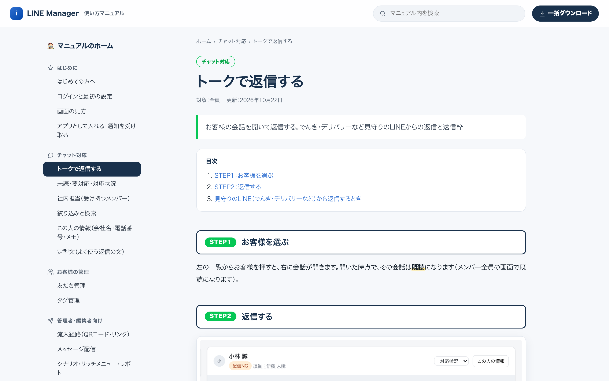

拡張ツール（LINE Manager）を
使ったLINE運用研修
全員が「拡張ツールから返信・配信できる」状態をつくる
- 日時
- 2026年11月18日（水）12:00〜12:45
- 参加
- 小林さん・折茂さん・伊藤公希さん
- 講師
- 伊藤 大峻
株式会社アイ・ステーション 情報発信PJTこの研修は録画して、現場向けの研修動画に使います
TODAY'S GOAL
今日のゴール
GOAL 1
拡張ツールとLINE公式の使い分けが分かる
どの作業をどちらの画面でやるか、迷わない
GOAL 2
トークの返信・タグ付けが自分でできる
対応状況・担当の付け方まで、ひと通り
GOAL 3
配信と、お金がかかる送り方が分かる
LINE公式のプランと通数の数え方まで
| ① | 拡張ツールとは・LINE公式との使い分け・Lステップとの比較 | 10分 |
| ② | 画面の見方・返信・対応状況・タグ | 10分 |
| ③ | 配信のやり方と、LINE公式のプラン・通数の数え方 | 10分 |
| ④ | Webアプリにして通知を受け取る／全体像とセキュリティ | 10分 |
| ⑤ | 使い方マニュアル・質問 | 5分 |
拡張ツールを使ったLINE運用研修2
① WHAT IS IT
拡張ツール（LINE Manager）とはアイステの公式LINEに届いたメッセージを、メンバー全員で1か所で見て対応できるツール
- メッセージを見て返信する
- 要対応／対応中／対応済みをみんなで共有
- お客様ごとに社内担当を決める・引き継ぐ
- 会社名・電話番号・メモを残す
- タグでお客様を分けて絞り込む
- タグで絞って配信する・予約する
- 流入経路（QR・リンク）で入口を数える
現場の人は、まず「トーク」画面だけ使えればOK

拡張ツールを使ったLINE運用研修3
① WHICH SCREEN
拡張ツールとLINE公式管理画面の使い分け
| やりたいこと | 拡張ツール | LINE公式 | ポイント |
|---|---|---|---|
| 1対1の返信 | ◎ | ○ | 拡張ツールなら「誰が返したか」「対応済みか」が残る |
| 対応状況・担当・メモ | ◎ | × | 拡張ツールだけの機能 |
| タグ・絞り込み | ◎ | △ | 商材タグ・接触NG・配信NG が使える |
| タグで絞った配信・予約 | ◎ | △ | 本接続のLINEだけ（次のページ） |
| 流入経路（QR・リンク） | ◎ | △ | 入口ごとに登録数・クリック数が分かる |
| あいさつ・自動応答（見守りのLINE） | — | ◎ | 見守りのLINEは、LINE公式側の設定がそのまま動く |
拡張ツールを使ったLINE運用研修4
① COMPARE
何もつけない・Lステップ・拡張ツールの比較
LINE公式だけ
0円（ツール代）
- チャットで1対1の返信
- 一斉配信・あいさつ・自動応答
- LINEごとに管理画面が分かれる
- 担当の割り振り・引き継ぎ、入口ごとの細かい集計は手作業
Lステップ
月0〜32,780円（税込）×LINEの数
- シナリオ・回答フォーム・予約・分析など機能がとても多い
- LINE1つごとに契約。有料プランは最低3か月
- 解約すると、同じLINEでは再契約できない
拡張ツール（自社）
月880円（サーバー代・税込）
- 複数のLINEを1画面で・担当と対応状況を共有
- タグ・配信・予約・入口ごとの集計・スマホ通知
- つなぐLINEが増えても費用は同じ
- 特別な機能は、必要になったら自社で足す
いま拡張ツールにつないでいるLINE 9つ分を、それぞれで運用した場合のツール代（月額）
LINE公式だけ
0円
Lステップ（スタンダード）
196,020円
拡張ツール
約880円
※どれを選んでも、LINE公式アカウントのプラン料金（次の③で説明）は別にかかります。Lステップ：スタート月5,000円・スタンダード月21,780円・プロ月32,780円（税込・各5,000／30,000／50,000通）。料金は2026年11月時点の各社公式サイトより
拡張ツールを使ったLINE運用研修5
① TWO TYPES
つなぎ方は2種類：「本接続」と「見守り」
| 本接続 | 見守り | |
|---|---|---|
| 今つないでいるLINE | 総合窓口 | でんき問合せ・空き家の電気・デリバリー導入支援・取引先様窓口・ママスクエア・医療介護サポートセンター・スマホコム・映像サービス窓口 |
| メッセージを見る・通知 | できる | できる |
| 1対1の返信 | できる | できる（送信枠を使う） |
| タグ・メモ・対応状況 | できる | できる |
| 配信・予約・シナリオ | できる | できない |
| あいさつ・自動応答・メニュー | 拡張ツールで設定 | LINE公式（または元のツール）のまま |
見守りのLINEで拡張ツールに出るのは、つないだあとに話しかけてきた人・友だち追加した人です。前からいる友だち全員が出るわけではありません。
拡張ツールを使ったLINE運用研修6
② SCREEN
画面の見方
| ① | LINEアカウントを切り替える 赤い数字＝未読の数 |
| ② | メニュー（トーク・友だち管理・タグ・配信） |
| ③ | お客様の一覧 未読・要対応・自分の担当で絞れる |
| ④ | 会話と返信の欄 |
未読はメンバー全員で共通。誰かが開くと全員の画面で既読になる
拡張ツールを使ったLINE運用研修7
② REPLY
トークで返信する
- 左の一覧からお客様を押す（開くと既読になる）
- 返信の欄に入力。よく使う文は「定型文」から入れる
- 「送信」→ 確認の小窓で送り先と文面を見て「送信する」
- 最初に返信した人が、自動で社内担当になる
「接触NG」タグの人に送ろうとすると赤い注意が出る。社内担当・管理者に確認してから


拡張ツールを使ったLINE運用研修8
② STATUS
対応状況と社内担当で「対応もれ」を防ぐ
| 対応状況 | 使いどころ |
|---|---|
| 要対応 | 返事が必要。お客様からメッセージが来ると自動でつく |
| 対応中 | 調べている・社内で確認している |
| 対応済み | やりとりが終わった |
- 一覧の上の「要対応」を押すと、返事待ちのお客様だけ出る
- 「自分の担当」で、自分が受け持つお客様だけ見られる
- 担当の引き継ぎは、会話の上の「この人の情報」から変える
LINE公式のチャットから返信したときは、拡張ツールに出ない。手で「対応済み」にしておく
拡張ツールを使ったLINE運用研修9
③ TAGS
タグでお客様をグループ分けする配信の「送る相手」は、このタグで決まる
- 「タグ管理」でタグを作る（例：商材:このまちでんき、展示会2026）
- 「友だち管理」でお客様にチェック →「タグを一括付与」
- 流入経路の入口に「商材」を入れると、その入口から来た人に商材タグが自動でつく
| 決まったタグ | 動き |
|---|---|
| 接触NG | 配信が届かない。1対1も赤い注意 |
| 配信NG | 配信だけ届かない。返信はできる |


拡張ツールを使ったLINE運用研修10
③ BROADCAST
配信のやり方（本接続のLINE）
- 「送る相手」で友だち全員かタグで絞るを選ぶ（除くタグも選べる）
- テキスト・画像・カードで吹き出しを作る（1回で5つまで）。右にスマホでの見え方が出る
- 「テスト送信」で社内の人に1通送って確かめる
- 「今すぐ」か「日時を決めて予約」→「配信する」
送る人数から、ブロック中・接触NG・配信NGの人は自動で除かれる

拡張ツールを使ったLINE運用研修11
③ LINE PLAN
LINE公式アカウントのプランと、通数の数え方
| プラン | 月額（税別） | 無料で送れる通数 | 超えたら |
|---|---|---|---|
| コミュニケーション | 0円 | 200通 | 送れない |
| ライト | 5,000円 | 5,000通 | 送れない |
| スタンダード | 15,000円 | 30,000通 | 1通 約3円で追加 |
数え方＝「送った回数 × 送った人数」（1回に吹き出し3つまでは1通）
例：1,000人に月3回配信 → 3,000通 → ライトでOK
例：5,000人に月2回配信 → 10,000通 → スタンダードが必要
例：1,000人に月3回配信 → 3,000通 → ライトでOK
例：5,000人に月2回配信 → 10,000通 → スタンダードが必要
プランと通数はLINEアカウントごと。プラン変更・課金は必ず折茂さん経由
| 数える（お金がかかる） | 数えない（無料） |
|---|---|
| 一斉配信・絞り込み配信 | LINE公式のチャットでの返信 |
| 予約配信・シナリオ（ステップ）配信 | あいさつメッセージ |
| 拡張ツールからの1対1の返信 | 応答メッセージ（自動返信） |
| （拡張ツール・LINE公式・Lステップのどれから送っても同じ） | 拡張ツールの自動返信 |
見守りのLINE（でんき問合せなど）は、拡張ツールから返信すると1通ずつ数えます。今月の残りは返信画面の下に出ます。枠が尽きたら、LINE公式のチャットから返信すれば無料です
出典：LINEヤフー for Business「LINE公式アカウント料金プラン」（2026年11月時点）。Messaging APIのPush・Multicast・Broadcast・Narrowcastは数える／Replyは数えない
拡張ツールを使ったLINE運用研修12
④ APP & NOTICE
Webアプリにして、スマホ・PCで通知を受け取るアプリストアは使わない。ホーム画面に追加するだけで、新しいメッセージが来たら通知が届く
| 端末 | 入れ方 |
|---|---|
| iPhone | Safariで開く → 共有ボタン（□に↑）→「ホーム画面に追加」→ 増えたアイコンから開いてログイン |
| Windows | Edgeで開く →「…」→「アプリ」→「このサイトをアプリとしてインストール」 |
| Mac | Safariで開く → メニューの「ファイル」→「Dockに追加」 |
| 通知 | 「アカウント設定」→「通知をオンにする」→「許可」→「テスト通知」で届けば完了 |
iPhoneは「ホーム画面に追加」したアイコンから開いたときだけ通知が届きます。通知は端末ごとに1回ずつ設定
ista…/manager

‹›⬆︎📖
1Safariで開いて、下の共有ボタン
コピー
リーディングリストに追加
＋ ホーム画面に追加
ブックマークを追加
2「ホーム画面に追加」
LINE Manager
3アイコンから開いて通知をオン
9:41
11月18日 水曜日
総合窓口｜山田 太郎お問い合わせの件、よろしくお願いします
4メッセージが来たら通知
画面はイメージです（実際の表示は端末・バージョンで少し違います）
拡張ツールを使ったLINE運用研修13
④ OVERVIEW
全体像：どこで動いていて、どう守っているか
お客様LINEで
メッセージ
メッセージ
そのまま
LINEのサーバーLINEヤフー社
署名つきで
届く
届く
さくらのVPS（アイステ契約・北海道 石狩）
拡張ツール（LINE Manager）
議事録BOT
SNSダッシュボード
Gloria公式HP・メール送信
暗号化
（HTTPS）
（HTTPS）
スタッフPC・スマホ
（ログイン＋通知）
（ログイン＋通知）
通信はすべて暗号化（HTTPS・HSTS）
ログインしないと何も見えない
権限は3段階（管理者・編集者・一般）。仕組みの内側でも止める
パスワードは元に戻せない形で保管
LINEからの通知は、署名で本物か毎回確認
送信・設定変更・メンバー変更は操作記録が残る
毎朝4時に自動でバックアップ（30日分）＋更新の前にも
外から入れる入口は必要なものだけ。鍵は管理者だけが読める場所に保管
いまの状態（11/18）
メモリ 1GB
使用 約45%
ディスク 50GB
使用 13%
CPU（2コア）
ほぼ0
プラン変更（1GB 月880円 → 2GB 月1,738円）が必要になる目安
- メモリの空きが、いつも200MBを切る・動きが重い
- 同じサーバーに、仕組みをあと2〜3個載せる（HP・AI処理など）
- ディスクが80%を超える
目安を超えたら、管理者全員の画面に自動でお知らせが出ます。友だちが増えても保存データは今3.7MBと小さいので当面は不要
拡張ツールを使ったLINE運用研修14
⑤ MANUAL
困ったときは「使い方マニュアル」Lステップのマニュアルと同じように、知りたい操作から探せる
- 拡張ツールの左メニューのいちばん下から、ブラウザで開く
- ログインなしで誰でも開ける（社外の人・アカウントがない人にも共有できる）
- 上の検索欄に知りたいことを入れて探す（例：定型文、未読、担当）
- 「目的から探す」「困りごとから探す」からも探せる
hito-hue.github.io/share/ista-line-manual-363b72/


拡張ツールを使ったLINE運用研修15